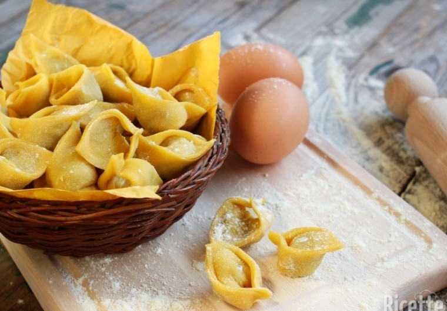

I CAPPELLETTI
PRIMI PIATTI

- Descrizione
- I cappelletti sono un formato di pasta all'uovo ripiena tradizionale che si ottiene tagliando la sfoglia di pasta in quadrati o cerchi, al centro dei quali viene posto il ripieno. La pasta viene poi piegata prima in due a triangolo unendo le estremità intorno a un dito della mano.
I cappelletti vengono serviti tradizionalmente in brodo di carne.
- Preparazione
- I cappelletti si distinguono dai tortellini per il modo di chiuderli: una volta messo il ripieno nella pasta, questa viene piegata su se stessa, poi - tramite un attrezzo munito di lama circolare - si tagliano dei fagottini.
Il ripieno dei cappelletti è diverso a seconda delle zone, nelle ricette romagnole, il ripieno è detto è a base di ricotta, a cui possono essere aggiunti altri formaggi teneri (caciotta o raviggiolo), parmigiano-reggiano grattugiato, noce moscata, uova crude e in alcune zone scorza di limone grattugiata. La sfoglia viene tagliata in quadratini di circa 5 cm di lato; in ciascuno di essi viene inserito un cucchiaio di ripieno. I cappelletti romagnoli vanno gustati sempre in brodo: essi vanno lessati in un ottimo brodo di carne. È buona norma non prelevarli subito dalla pentola ma lasciarli a bagno per qualche minuto affinché assorbano bene il brodo.
Torna alla pagina iniziale
by Bartoli Matteo